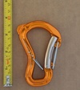
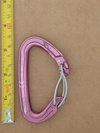
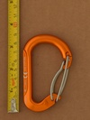
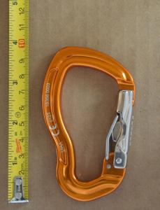
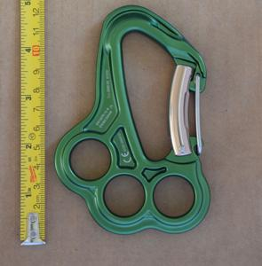
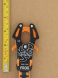
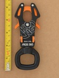
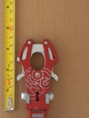

Multi-Gate Carabiners
| Image | Summary | ||||
|---|---|---|---|---|---|
| Grivel Clepsydra (blank gate) | hourglass | full-auto | multi-gate | double-gate belay carabiner | |
| Grivel Clepsydra (forged name) | hourglass | full-auto | multi-gate | double-gate belay carabiner | |
|  | Grivel Clepsydra S v1 | hourglass | full-auto | multi-gate | double-gate belay carabiner |
| Grivel Mega Twin Gate | HMS | full-auto | multi-gate | twin-gate HMS | |
|  | Grivel Plume G | asymmetric D | full-auto | multi-gate | double-gate compact carabiner |
|  | Grivel Plume HMS | HMS | full-auto | multi-gate | micro HMS double-gate carabiner |
| Grivel Sigma | asymmetric D | full-auto | multi-gate | robust multi-gate carabiner | |
|  | Grivel Tau T | S-spine | full-auto | multi-gate | external spring, semi-locking carabiner |
|  | Grivel VLAD Twin Gate | other | full-auto | multi-gate | integral rigging plate, multigate |
|  | Kong FROG MY 2021 | fork | assisted | multi-gate | push to clip multi-gate mechanism |
|  | Kong FROG 360 | fork | assisted | multi-gate | push to clip multi-gate mechanism, textile friendly swivel |
|  | Kong FrOG (EXPERIMENT) | fork | assisted | multi-gate | push to clip multi-gate mechanism, developmental pre-production experiment |